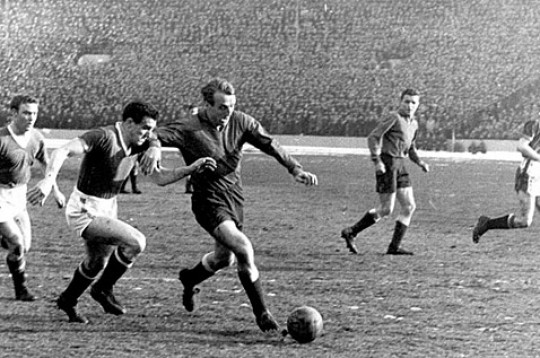
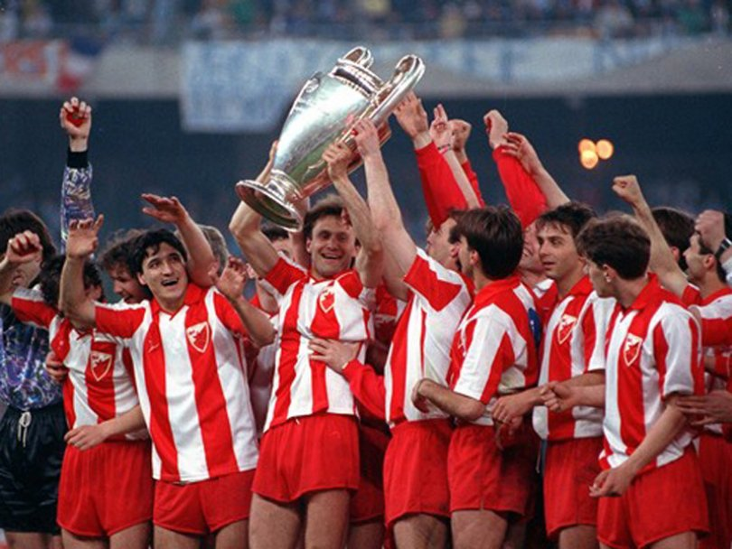
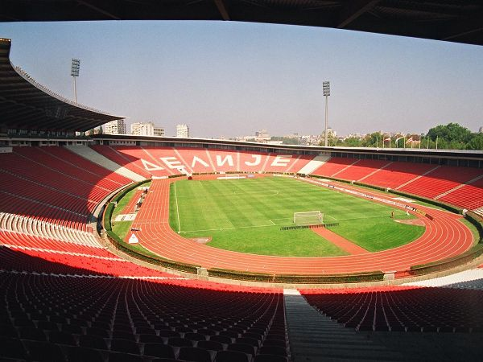
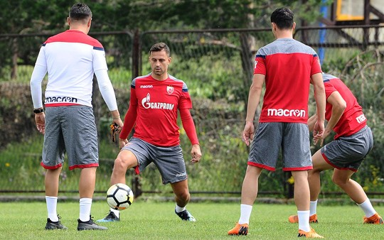

Почеци

{kind=link}
Фудбалски клуб Црвена звезда основан је 4. марта 1945. године, на иницијативу чланова Уједињеног савеза антифашистичке омладине Србије.
Прва утакмица одиграна је на сам дан оснивања, а ривал је био Први батаљон Друге бригаде КНОЈ-а. Наш тим је славио резултатом 3:0 на игралишту „Студента“. Црвена звезда је тада наступала у следећем саставу: Голубичић (Попадић), Станковић, Филиповић, Печенчић, Ћирић, Јовановић, Величковић, Томашевић, Шапинац (Стокић), Спасојевић и Хорватовић. Стрелац првог, историјског гола за Црвену звезду, био је Коста Томашевић. Током прве године постојања, Црвена звезда је одиграла укупно 36 мечева. Забележила је 30 победа, нерешено је било пет пута, а једини пораз доживљен је у Темишвару против Румуније.
Шампиони

{kind=link}
Награда за године успешног рада на Маракану је коначно стигла 1991. године када Златна генерација српског клуба осваја Европу и свет. У финалу Купа европских шампиона побеђен је Олимпик из Марсеја, након извођења једанаестераца. Само неколико месеци касније, у Токију, пехар намењен светском клупском прваку такође је заблистао у трофејној сали стадиона „Рајко Митић“. И наредне године, Црвена звезда је наступала у Купу европских шампиона, али због увођења санкција није одиграла ниједну утакмицу пред својим верним навијачима. Сампдорија је била задња препрека коју је наш тим требало да савлада како би поново играо финале овог такмичења. Утакмица која се играла у Софији завршена је резултатом 3:1 у корист тима из Италије.
Стадион

{kind=link}
Дом нашег клуба се налази у улици Љутице Богдана на броју 1а. Велелепни спортски објекат, један од највећих на Балкану, сведок је вишедеценијских успеха и победа Црвене звезде.
Званично име нашег стадиона од децембра 2014. године гласи „Рајко Митић“, по првој Звездиној звезди. Претходно, званично име стадиона било је „Стадион ФК Црвена звезда“. Многи навијачи га једноставно зову „Маракана“.
Светла будућнист

{kind=link}
Нажалост, једна генерација младих и суперквалитетних играча услед грађанског рата на простору бивше Југославије није успела да се задржи на окупу. Уследиле су спортске санкције према нашој земљи и забрана учешћа у међународним надметањима. Стање у клубу се с пуним правом често поистовећује са стањем у држави, јер још од оснивања судбину српског народа делио је и наш клуб.
Црвена звезда се нашла у тешком периоду током којег руководство и играчи често мењани, квалитет фудбала је опао, али и у таквој ситуацији клуб је успео да освоји завидан број трофеја у домаћим оквирима.
На лето 2014. године, Црвена звезда је освојила 27. титулу првака државе, и то након вишегодишњег „поста“. Две године касније, 28. титула првака освојена је на веома доминантан и убедљив начин, и управо је овај трофеј показатељ да се Црвена звезда опоравља, и да се са много више оптимизма може гледати ка будућности најтрофејнијег клуба у Србији.